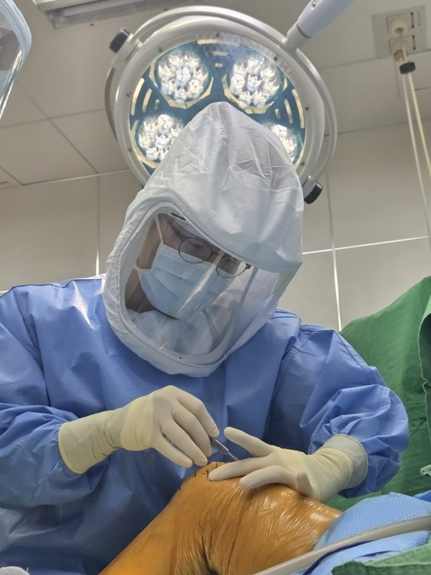

I · About
소개

정형외과 전문의 남희승입니다. 종양 수술과 무릎 관절치환술, 관절경을 수련했고 지금은 무릎, 고관절, 어깨, 발과 발목, 골절과 스포츠 손상을 진료합니다.
수술이 필요한 경우와 그렇지 않은 경우를 근거와 함께 설명하는 것이 환자의 결정에 가장 도움이 된다고 생각해 칼럼으로 정리하고 있습니다.
- 2007~2013
- 중앙대학교 의학사
- 2013~2017
- 중앙대학교병원 인턴, 군의관
- 2017~2022
- 원자력병원 정형외과 전공의(골종양, 연부조직종양, 사지구제술)
- 2022~2023
- 분당서울대병원 임상강사(무릎 관절치환술, 관절경)
- 2023~현재
- 힘찬병원 정형외과(현재 인천힘찬종합병원)
II · Philosophy
진료 철학
삶의 마지막 순간을 항상 생각하며, 지금 하고 있는 일과 만나는 사람에게 최선을 다하기. (Memento Mori)
일상을 먼저 묻습니다. 영상 검사만 보지 않고 어떤 동작에서 아픈지, 무엇을 다시 하고 싶은지 함께 확인합니다.
선택지를 나란히 놓고 설명합니다. 수술이 필요한 경우와 그렇지 않은 경우의 근거를 말씀드립니다.
회복은 혼자 하지 않습니다. 보호자와 재활 계획을 함께 세우고 회복 과정을 끝까지 확인합니다.
III · Practice
진료 분야
- Knee무릎
- 퇴행성 관절염, 연골판 손상, 전방십자인대 손상, 인공관절 치환술
- Hip고관절
- 고령자 고관절 골절, 인공고관절 치환술, 골두 괴사
- Shoulder어깨
- 회전근개 파열, 어깨 탈구, 관절경 수술
- Foot & Ankle발과 발목
- 무지외반, 발목 골절과 통증, 당뇨발
- Hand & Elbow손과 팔꿈치
- 손 저림, 손목 골절, 팔꿈치 골절
- Trauma & Sports골절과 스포츠 손상
- 일상과 운동 중 생긴 골절, 인대와 힘줄 손상
IV · Columns
칼럼
- 외과의사의 “~할걸” 노트수술 사진 폴더 이름 뒤에 남긴 한 줄, 다음 수술을 위한 기록 · 2026.10.29
- 뼈가 보내는 첫 신호, 골감소증골밀도 T점수 읽는 법과 골다공증·골절을 막기 위해 지금 할 일 · 2026.10.29
- 내리막길에서 무릎이 ‘뚝’, 반월상 연골판 방사형 파열과 관절경 봉합술 사례MRI와 관절경 사진으로 보는 연골판 봉합술과 수술 후 재활
- 경골 간부 골절의 치료 옵션7명의 사례로 보는 금속정과 금속판 선택, 수술 전후 엑스레이
- 무지외반증, 언제 수술을 생각해야 할까요?평가 방법, 신발과 보조기, 수술을 고려하는 시점
- 제5중족골 기저부 골절, 꼭 통깁스를 해야 할까요?발목을 접질린 뒤 진단받는 골절의 치료 선택지
- 수술은 최후의 수단이지, 최악의 수단은 아닙니다수술을 앞둔 걱정과 결정 전에 확인할 것
더 많은 글은 네이버 블로그 Autophagy | 달리는의사에서 볼 수 있습니다.
V · Press
기고·언론
- 퇴행성 관절염이란?월간 <건강과 생명> 12월호 특집, 2026.12 발행 예정
- 뼈가 보내는 첫 신호 ‘골감소증’… 근력 운동하고 골밀도 살펴야브릿지경제 [명의칼럼], 2026.10.13
VI · Contact
연락
이력과 연구 분야는 공식 홈페이지에서 확인할 수 있습니다.
이메일로는 개인 진단이나 처방을 해 드릴 수 없습니다. 증상이 있으면 가까운 의료기관에서 진료를 받으세요.